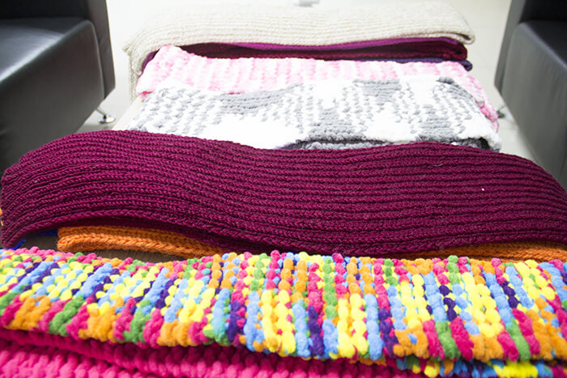
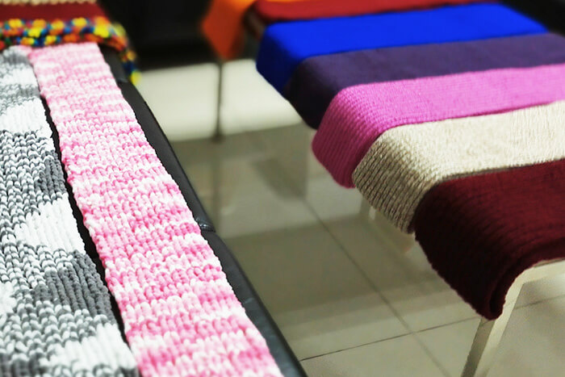

北京壹点公益助凉山孩子“温暖一冬”
2016-10-20 |
北京壹点公益助凉山孩子“温暖一冬” 2016-10-20| 速运北京区壹点公益8月下旬发起 “壹个暖冬”公益活动，组织志愿者认领围巾编织410条，于10月中收回，加配保温杯、书包组成“壹个暖冬温暖包”，将于11月捐给凉山顺丰爱心班的孩子。温暖包中的书包、保温杯由自个网招募设计师志愿者完成。


2016-10-20 |
北京壹点公益助凉山孩子“温暖一冬” 2016-10-20| 速运北京区壹点公益8月下旬发起 “壹个暖冬”公益活动，组织志愿者认领围巾编织410条，于10月中收回，加配保温杯、书包组成“壹个暖冬温暖包”，将于11月捐给凉山顺丰爱心班的孩子。温暖包中的书包、保温杯由自个网招募设计师志愿者完成。